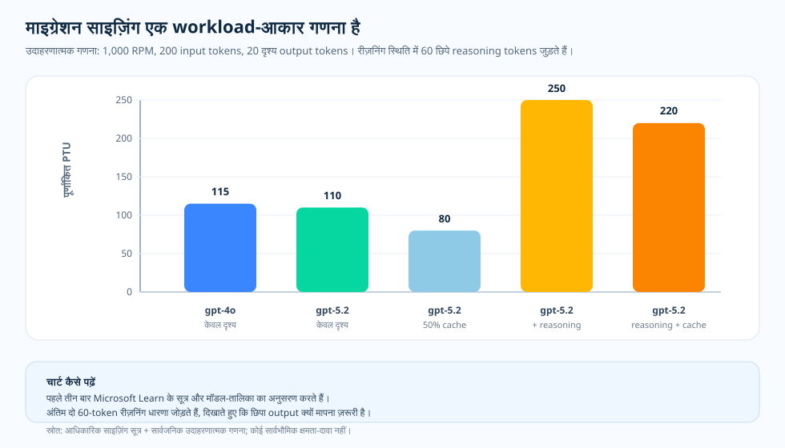

संचालन-लेख · GPT-4o से GPT-5.x साइज़िंग
सिर्फ़ मॉडल-नाम के आधार पर reasoning migration का आकार तय न करें
एक टीम gpt-4o ट्रैफ़िक को GPT-5.x reasoning model पर ले जाना चाहती है
और नई तैनाती के लिए PTU संख्या निकालनी है। पहली प्रतिक्रिया यही होती है कि जो
पहले काम कर रहा था, उसी को आगे बढ़ा दिया जाए — या तो पुराना gpt-4o
PTU size जस का तस रख दें, या उस पर पूरे "5.x" परिवार का कोई multiplier लगा दें।
यानी मान लिया जाता है कि model name ही resize करने के लिए काफ़ी है। लेकिन PTU
sizing model name से नहीं, token shape से तय होती है — prompt size, दिखने वाला
output, छिपे reasoning tokens, cache hit rate, और response ceiling सब मिलकर
नतीजा बदलते हैं। इसलिए असली संचालन-सवाल यह है: क्या सिर्फ़ model name काफ़ी है,
या पहले request shape को दोबारा मापना पड़ेगा?
max_output_tokens)
को यह repository documented platform behavior नहीं मानती, बल्कि जाँचने लायक
admission-risk hypothesis मानती है — यानी यह देखना होगा कि कहीं वही workload के
reserve किए गए PTU पर हावी तो नहीं हो रही। यह one-pager इसी एक बात को साफ़ करता
है और दायरा भी स्पष्ट रखता है: यह pinned pricing snapshots के साथ modeled
workload पर बनाया गया synthetic worked example है, measured capacity नहीं।
माइग्रेशन साइज़िंग का one-pager SVG खोलें।

पुराना size फिर से क्यों न अपना लें
पुराने size को दोबारा इस्तेमाल करने की प्रवृत्ति यह मान लेती है कि model name ही
size बता देता है — यानी gpt-4o के लिए काम कर चुका कोई number,
family multiplier लगाकर GPT-5.x पर भी चल जाएगा। इसे मानने से पहले दो चीज़ें साथ
देखनी चाहिए। पहली, documentation क्या कहती है: Microsoft Learn peak RPM, average
prompt और output tokens, cache rate, model का output-to-input ratio, और प्रति-PTU
Input TPM के आधार पर traffic को normalized TPM में बदलता है, और cached prompt
tokens को utilization से घटाता है। OpenAI reasoning tokens को ऐसे non-visible
output-side tokens के रूप में document करता है जो
output_tokens_details.reasoning_tokens में report होते हैं। दूसरी चीज़,
इस repository का illustrative worked calculation है, जो उसी documented formula को
एक example call shape पर चलाकर size को बदलने वाले factors को साथ-साथ रखता है —
यह किसी तैनाती का measurement नहीं है।
यही साथ रखकर देखना सबसे अहम है। अगर आप सिर्फ़ visible output देखें, तो migration
संभालने लायक लग सकता है — वही prompt और वही visible answer नए model पर लगभग उसी
level पर, या थोड़ा हल्का भी, size हो सकता है। लेकिन visible answer पूरी request
नहीं है। जैसे ही hidden reasoning output जुड़ता है, वही answer बहुत ज़्यादा
normalized TPM माँग सकता है। और इस repository की working hypothesis — documented
platform behavior नहीं, बल्कि test करने लायक admission risk — यह है कि बहुत बड़ा
max_output_tokens ceiling, चाहे वे tokens बने या न बनें, admission
weight reserve कर सकता है। इसलिए असली सवाल “क्या नया model भारी है?” नहीं, बल्कि
“मापी गई request shape — visible output, reasoning output, cache rate, और response
ceiling — वास्तव में कितना reserve करती है?” है। normalized-TPM formula,
per-model table, cache deduction, और reasoning-token accounting Microsoft Learn और
OpenAI document करते हैं। बहुत बड़ा max_output_tokens PTU admission
risk हो सकता है — यह इस repository का operational inference है। नीचे दिया गया
chart modeled workload पर pinned pricing snapshots के साथ एक synthetic worked
example है — यह measured capacity, live PTU throughput, या SLA नहीं है। नीचे का
chart size को प्रभावित करने वाले factors साफ़ दिखाता है।
प्रश्न
GPT-4o workload को PTU पर GPT-5.x के लिए size करने से पहले किन चीज़ों को फिर से मापना चाहिए?
सबूत
Microsoft Learn normalized-TPM formula देता है, और OpenAI reasoning-token accounting document करता है।
निर्णय
“5.x” family के अनुमान से नहीं, measured token shape से size करें।
आधिकारिक व्यवहार · normalized TPM
साइज़िंग का सूत्र token shape पर टिका है
Microsoft Learn traffic को normalized TPM में बदलकर PTU demand निकालता है। इनपुट हैं: peak RPM, average prompt tokens, average generated output tokens, cache rate, model का output-to-input ratio, और model का Input TPM per PTU value.
सूत्र:
normalized_tpm = rpm × (prompt_tokens × (1 - cache_rate) + output_ratio × output_tokens)
raw_ptu = normalized_tpm ÷ input_tpm_per_ptu
इसी वजह से family-level shortcut भ्रमित कर सकता है। किसी model का output ratio भारी हो सकता है, फिर भी उसका Input TPM per PTU पिछले model से ज़्यादा हो। सही जवाब आपके workload के असल prompt, output, और cache profile पर निर्भर करता है।
ऑपरेशनल नज़रिया · migration में क्या बदलता है
migration फिट होगा या नहीं, यह 4 चीज़ें तय करती हैं
1. output weighting
GPT-4.1 और उसके बाद के models के लिए Microsoft Learn कहता है कि utilization में output tokens का model-specific input-token weight होता है।
2. hidden reasoning
OpenAI reasoning tokens को non-visible output-side tokens के रूप में document करता है। इन्हें output_tokens_details.reasoning_tokens से मापें।
3. cache rate
Microsoft Learn कहता है कि cached prompt tokens PTU utilization से घटते हैं। इसलिए prefix shape बदलने पर sizing result बदल सकता है।
4. response ceiling
max_output_tokens दर्ज करें। यह repository बहुत बड़े ceiling को अंदाज़ से भरी value नहीं, बल्कि test करने लायक PTU admission-risk hypothesis मानती है।
उदाहरणात्मक गणना · वही visible workload
छिपा output नतीजा बदल सकता है

| row | model | cache rate | generated output assumption | rounded PTU |
|---|---|---|---|---|
| visible baseline | gpt-4o | 0% | 20 output tokens | 115 |
| visible migration | gpt-5.2 | 0% | 20 output tokens | 110 |
| visible migration + cache | gpt-5.2 | 50% | 20 output tokens | 80 |
| reasoning migration | gpt-5.2 | 0% | 20 visible + 60 reasoning tokens | 250 |
| reasoning migration + cache | gpt-5.2 | 50% | 20 visible + 60 reasoning tokens | 220 |
इसका मतलब
सिर्फ़ visible rows यह साबित नहीं करतीं कि GPT-5.x हमेशा GPT-4o से कम efficient है। reasoning rows असली फँसाव दिखाती हैं: hidden reasoning output आते ही, अगर cache और response policy को मापकर tune न किया जाए, तो वही visible answer बहुत ज़्यादा normalized TPM माँग सकता है।
ऑपरेटर चेकलिस्ट · capacity reserve करने से पहले दोबारा मापें
migration को सिर्फ़ नाम बदलना नहीं, measurement की तरह चलाएँ
- task mix तय रखें। prompt, tools, schema, retrieval placement, और sample distribution को model configurations के बीच byte-stable रखें।
- visible output मापें। migration से पहले और बाद visible output tokens के mean और p95 की तुलना करें।
- reasoning output मापें।
reasoning_tokenscapture करें; अंतिम answer text से उसका अंदाज़ न लगाएँ। - cache rate मापें। ख़ासकर ReAct या tool-schema changes के बाद, हर cache-key bucket के लिए
cached_tokens / prompt_tokensrecord करें। - ceiling को सही रखें। representative “visible + reasoning” percentile के आधार पर
max_output_tokensset करें, और rare long answers के लिए per-call override इस्तेमाल करें। - तभी PTU size करें। current model table और अपने measured workload shape के साथ normalized-TPM formula लागू करें।
स्रोत और सबूत की सीमा
Tier 1 — service contract (Microsoft Learn और OpenAI)। normalized-TPM sizing formula, per-model Input TPM per PTU और output-to-input ratio, GPT-4.1 और बाद का output-token weighting, utilization से 100% cache deduction, और reasoning-token accounting यहाँ documented हैं।
- [1] किसी workload के लिए PTU sizing तय करना — यह normalized-TPM calculation (Input TPM = peak RPM × prompt size, Output TPM = peak RPM × response size, Normalized TPM = input TPM × (1 − cache rate) + output-to-input ratio × output TPM, PTU = normalized TPM ÷ Input TPM per PTU), per-model Input TPM per PTU और output-to-input ratio values, और cached tokens के utilization calculation से 100% घटने की बात document करता है। स्रोत: Microsoft Learn दस्तावेज़ (2026-06-05 को लिया गया) · आर्काइव।
- [2] Foundry Models के लिए provisioned throughput क्या है? — यह PTU utilization model और यह बात document करता है कि request shape reserved capacity को कैसे consume करती है। स्रोत: Microsoft Learn दस्तावेज़ (2026-06-04 को लिया गया) · आर्काइव।
- [3] Azure OpenAI के साथ prompt caching — यह document करता है कि cached prompt tokens utilization से घटते हैं, इसलिए prefix shape बदलने पर sizing result भी बदल सकता है। स्रोत: Microsoft Learn दस्तावेज़ (2026-06-04 को लिया गया) · आर्काइव।
- [4] OpenAI reasoning models guide — यह reasoning tokens को
output_tokens_details.reasoning_tokensमें report होने वाले non-visible output-side tokens के रूप में document करता है। स्रोत: OpenAI दस्तावेज़ (2026-06-04 को लिया गया) · आर्काइव।
Tier 2 — operational inference (यह repository)। बहुत बड़े
max_output_tokens को PTU admission-risk hypothesis मानना, और
reasoning tokens तथा cached tokens के measurement contract को परिभाषित करना, इस
repository का operational inference है; यह Learn specification नहीं है।
- [5] यह repository,
docs/13-ptu-vs-payg-decision-runbook.md—mean_max_output_tokensrecord करती है और बड़ेmax_output_tokensको अंदाज़ से भरी value नहीं, बल्कि test करने लायक reserved admission weight मानती है। स्रोत। - [6] यह repository,
docs/14-observability-schema.md— PTU record का canonical contract, जोreasoning_tokens,cached_tokens, औरmax_output_tokens_sentको उनके source usage fields से map करता है। स्रोत।
यह विषय क्या साबित करता है, और क्या नहीं। यह पहुँच-तिथि पर Microsoft Learn के बताए PTU sizing contract — normalized-TPM formula, per-model Input TPM per PTU और output-to-input ratio, GPT-4.1 और बाद का output-token weighting, और 100% cache deduction — के साथ OpenAI की reasoning-token accounting और इस repository के इस rule of thumb को document करता है: sizing से पहले output, reasoning, cache, और ceiling को फिर से मापो। example chart documented formula को एक example call shape पर लागू करता है। यह worked calculation है, capacity guarantee नहीं। और यह साबित नहीं करता कि कोई खास GPT-5.x workload हर region, model version, या traffic shape में अपने GPT-4o predecessor से भारी या हल्का ही होगा।
व्यावहारिक नियम
व्यावहारिक नियम: GPT-4o ट्रैफ़िक को PTU पर GPT-5.x में ले जाने से पहले
output, reasoning, cache, और max_output_tokens ceiling policy को
फिर से मापें। उसके बाद ही normalized-TPM formula से size करें, क्योंकि model
name अकेले workload का size तय करने के लिए काफ़ी नहीं है।
यह लेख operations वाली इस कड़ी को यहीं पूरा करता है। अब बात फिर उस methodology पर लौटती है जिसने तय किया कि प्रकाशित करने लायक मज़बूत evidence किसे माना जाए।
लैब ने कैसे तय किया कि कौन-सा evidence प्रकाशित करने लायक मज़बूत था?